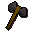
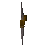
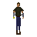

Iron battleaxe

| Config name | iron_battleaxe |
| Item id | 1363 |
| Value | 182 gp |
| Weight | 6lb |
| Members | No |
| Tradeable | Yes |
| Stackable | No |
| Equip slot | righthand |
| Options | Wield |
| Category | weapon_axe |
| Defined in | scripts/skill_combat/configs/melee/battleaxes.obj |
| Equipment stats | Stab att -2, Slash att 8, Crush att 5, Range def -1, Strength 13 |
Iron battleaxe
A vicious looking axe.
How to make
| Skill | Level | XP | Ingredients | Tool | How | Where | Makes |
|---|---|---|---|---|---|---|---|
| Smithing | 25 | 75.0 | interface | anvil | 1 |
Dropped by
| NPC | Level | Quantity | Rarity | Via | Notes |
|---|---|---|---|---|---|
 Magic axe | 42 | 1 | Always | ||
| 57 | 1 | 3/128 (2.34%) | |||
| 57 | 1 | 3/128 (2.34%) | |||
 Thug | 10 | 1 | 1/64 (1.56%) | ||
| 10 | 1 | 1/128 (0.78%) | |||
| 20 | 1 | 1/128 (0.78%) | |||
| 9 | 1 | 1/128 (0.78%) |
Sold at
| Shop | Shopkeeper | Stock |
|---|---|---|
| Armoury | 5 | |
| Gulluck and Sons | 5 | |
| Bob's Brilliant Axes. | 5 | |
| Brian's Battleaxe Bazaar. | 3 |
Referenced in scripts
scripts/drop tables/scripts/dwarf.rs2scripts/drop tables/scripts/ice_warrior.rs2scripts/drop tables/scripts/thug.rs2scripts/levelrequire/scripts/tier1.rs2scripts/levelup/scripts/levelup_unlocks_smithing.rs2